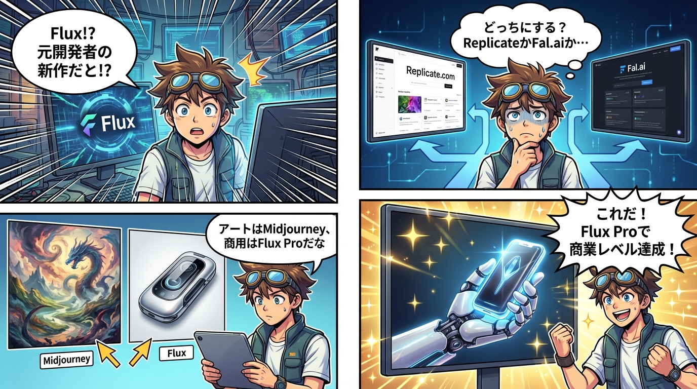

Flux: 次世代画像生成AIの実践活用ガイド
📖 4コマ漫画で理解するFlux
第1章: Fluxの誕生背景と開発哲学
📊 図解: Fluxの誕生背景と開発哲学

Fluxは、かつてStable Diffusionを開発したStability AIの元開発者たちによって設立されたBlack Forest Labsが開発した次世代画像生成AIです。開発者たちは、Stability AIが生成AIを採用した新たな方針や方向性に満足できず、独自のビジョンを実現するためにBlack Forest Labsを立ち上げました。彼らが目指したのは、単なる「アート作品」ではなく、商業利用に耐えうる実用的な画像生成ツールの開発でした。
現時点では、FluxはMidjourneyと並ぶ、あるいはそれを超える画像生成AIとして評価されています。特に、リアルな画像表現、プロンプトへの忠実性、動画生成機能、そして商業利用への対応という点で、従来のツールとは一線を画しています。
第2章: Midjourneyとの明確な使い分け
📊 図解: Midjourneyとの明確な使い分け
画像生成AIの世界では、「どのツールを使うべきか」という問いに対して、明確な答えがあります。Midjourneyはアートスタイル、幻想的・抽象的な表現を得意とし、ファンタジーや芸術作品の生成に最適です。一方、Fluxは写実的な人物表現、正確な手の描写（従来のAIが苦手とした6本指問題の解決）、そして商品テキストの正確な描写を得意としています。
実務的な観点から見ると、商業クオリティを求める場合、写実性が必要な場合、そして動画生成が必要な場合は、Fluxが圧倒的に優れています。逆に、アート表現やファンタジー、抽象スタイルが必要な場合はMidjourneyを選択するのが最適です。つまり、両者は競合関係ではなく、補完関係にあるツールとして捉えるべきです。
第3章: Fluxを使うための2つのプラットフォーム
📊 図解: Fluxを使うための2つのプラットフォーム

Fluxを実際に使用する際には、主に2つのプラットフォームが選択肢となります：Replicate.comとFal.aiです。両者はいずれもBlack Forest LabsがFluxを提供しているプラットフォームですが、ターゲットユーザーと特性が大きく異なります。
Replicate.com - 開発者向けプラットフォーム
📊 図解: Replicate.com - 開発者向けプラットフォーム

Replicate.comは、どちらかというと上級者・開発者向けのプラットフォームです。操作がやや複雑ですが、その分、数百万種類のAIモデルから自由に選択できるという大きな利点があります。出力時間はモデルによって変動しますが、大きなストレスとなるほどではありません。
商用利用に関しては、Flux Proなどのモデルを使用することで完全に対応可能です。料金体系は独自のクレジット制度を採用しており、実際に使用してみると、Midjourneyの月額サブスクリプションと比較してもコストが非常に低いという印象です。利用量に応じた従量課金制のため、必要な時に必要なだけ使うという柔軟な運用が可能です。
Fal.ai - 一般ユーザー向けプラットフォーム
📊 図解: Fal.ai - 一般ユーザー向けプラットフォーム

Fal.aiは、ノーコードで直感的な操作が可能な一般ユーザー向けプラットフォームです。操作がシンプルで使いやすく、出力時間も数秒から数十秒と非常に高速です。ただし、使用できるモデルはFluxシリーズのみに限定されています。
画像品質に関しては、SNS向けの画像や動画生成に適しており、無料または低コストで利用できる点が魅力です。手軽にFluxを試してみたい場合や、SNS投稿向けのコンテンツ制作には最適な選択肢です。
第4章: Flux Proモデル - 商業利用のベストチョイス
📊 図解: Flux Proモデル - 商業利用のベストチョイス

Fluxには複数のモデルが存在しますが、クオリティ重視で商業利用を前提とする場合、Replicate版のFlux Proモデルが最良の選択となります。このモデルは商業レベルの高品質を実現しており、プロフェッショナルな用途にも十分耐えうる品質を提供します。
一方、手軽さやSNS投稿向けのコンテンツ制作であれば、Fal.aiのFluxで十分な場合もあります。重要なのは、用途に応じて適切なプラットフォームとモデルを選択することです。
第5章: 実践における選択基準
Fluxを実務で活用する際の選択基準をまとめると以下のようになります：
Replicate版Flux Proを選ぶべき場合
・商業利用を前提とした高品質な画像が必要
・写実的な人物や商品の画像生成
・正確なテキスト描写が必要な場合
・動画生成機能が必要な場合
Fal.ai版Fluxを選ぶべき場合
・手軽に試してみたい
・SNS投稿向けのコンテンツ制作
・コストを最小限に抑えたい
・シンプルな操作で即座に結果が欲しい
まとめ
このように、Fluxは用途に応じて最適な選択肢を提供する柔軟性の高いツールです。MidjourneyとFluxを使い分け、さらにReplicate.comとFal.aiを適切に選択することで、あらゆる画像生成ニーズに対応できる環境を構築できます。
商業利用を前提とする場合は、迷わずReplicate版のFlux Proを選択することをお勧めします。一方、SNSでの発信や個人的な用途であれば、Fal.aiの手軽さとコストパフォーマンスを活かすのが賢明です。
重要なのは、ツールの特性を理解し、目的に応じて最適な組み合わせを選択することです。本書で紹介した知識を活用し、効果的な画像生成ワークフローを構築してください。